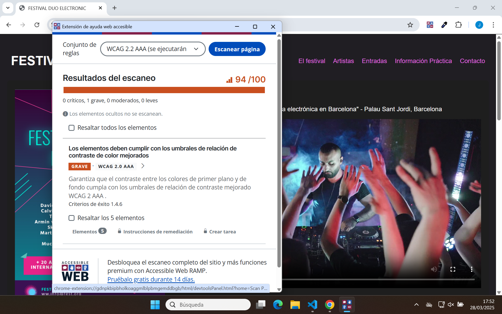
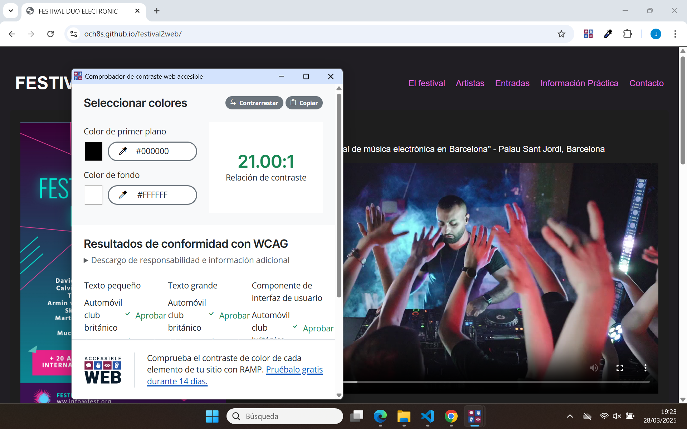
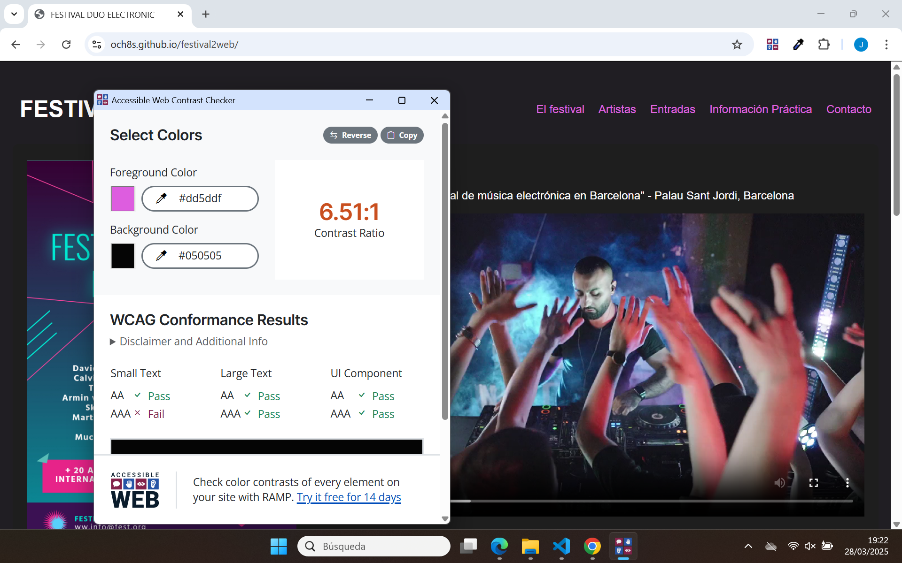
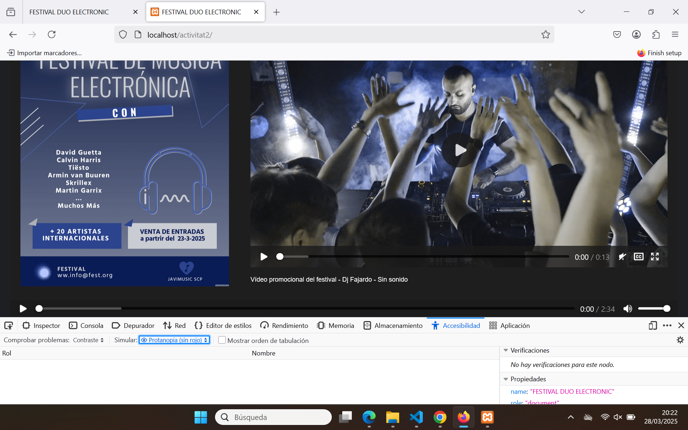
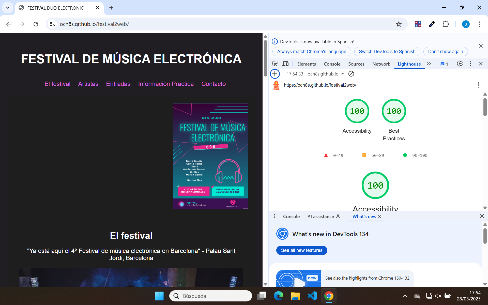
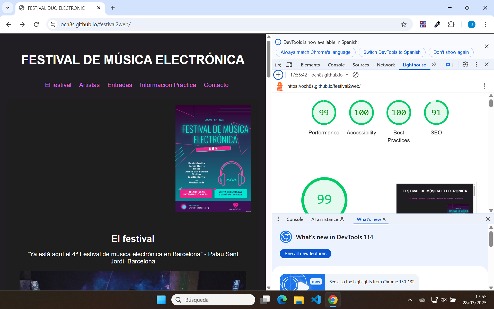
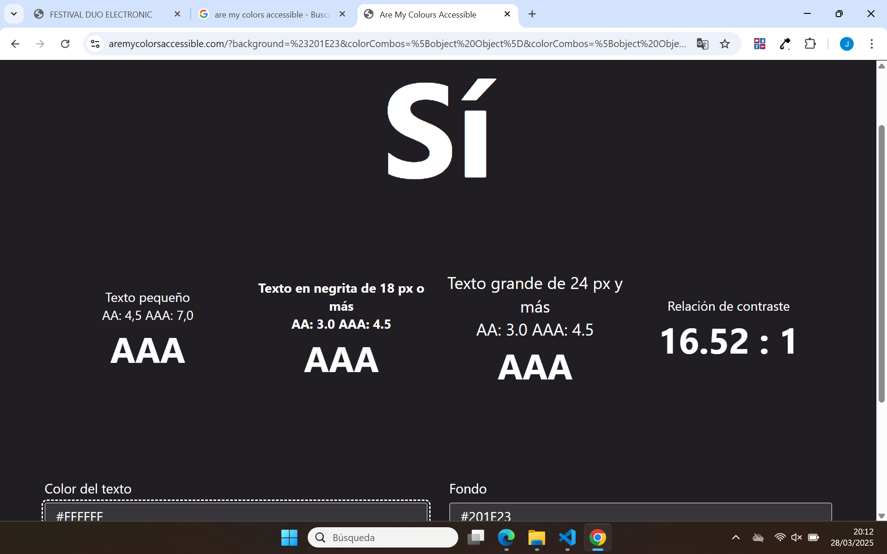
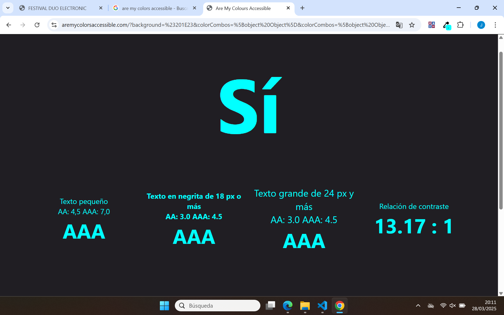

Vols escoltar música mentre veus les comprobacions?
Àudio oficial del festival amb descripció textual
Web Helper Accessible
Resultats de l'eina Web Helper Accessible - Accessibilitat / Colors



Accessibilitat Firefox
Resultats de l'eina d'accessibilitat de Firefox - Dalotonisme: Protanopia

La protanopia és una forma de daltonisme on no es percep el color vermell. Les persones amb protanopia veuen el vermell com a beix i el verd amb tonalitats vermelloses
Lighthouse
Resultats de l'eina Lighthouse Accessibilitat - Colors


Are My Colors Accessible?
Resultats de l'eina Are My Colors Accessible? - Colors contrast


Utilització de extensió ColorZilla de Google